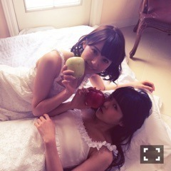
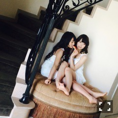
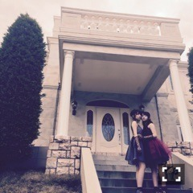

| 2015/03 10 Tue | むず痒い体験。631回目 |
TENUSISの
Tシャツとスウェット確保！
今年はメッシュやレースの
透け素材が多いのね。
春が楽しみ〜

一昨日はアルバム特典の大撮影会。
4部まで無事終えました！
撮影された写真は自分だけのもの。
オリジナルのポーズは秘密です。
大切にしてほしいです。
今週はクルージングだね！
この日家に帰る前に
映画を2本観てから帰りました。
眠たい。。
そういえば、
ニコ生見てくださった方、
ありがとうございました。
撮影は時間もかかり
なかなか顔を出すことができず、
20時までの予定を延ばして頂いて
ギリギリにしゃべれました...
長時間視聴お疲れ様でした。
おひげさん面白かった！
ありがとうございました！
撮影風景の中継や
キャストさん監督のお話を
生で聴けるのは
なかなか貴重だと思います。
実はこの日クランクアップでした。
今日オールアップでした。
本当にお疲れ様でした。
いろんな気持ちが入り混じった
たくさん勉強になった期間。
無事撮影が終わり、
ほっとしています。
自分の中でやっと区切りがつく。
まったく安心はできてないし、
公開6月だけども
本当に、本当にちゃんと
切り替えよう。
心を強くして。
次あらば進む。
後悔のない年にしたい。
いっこ跳びたい。
がんばります。

BOMBよろしく願い！！
チェックしたら美彩先輩から
影響受けてる感じだた。
先輩さすがだ。
ひとりでもこうやって
写してもらえるようになりたい。

美彩と命は美しいでペアで映ったの。
なんて良いタイミング！


この赤いドレスリメイクされてて
バレリーナみたいで可愛かった
MVでのゴシック衣装もこの色だった
まりか
コメント(513)
2015/03/10 00:00